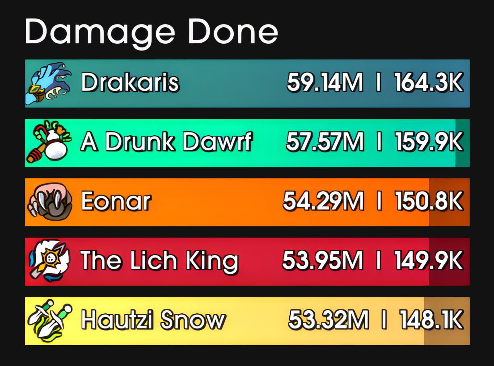

Home
Instructions
Download
Hautzii's
Details
Easy to follow instructions.
A clean details profile.

Instructions
Place the .tga file in your interface folder, located just before the AddOns folder.
Place the ElvUI_SkullflowerTP folder inside your AddOns folder.
Go in game, type /details options
In the Profiles tab, click on Import Profile and paste the content from the details.txt file.
Make sure the flat icons profile is selected.
In the Bars: General tab, paste : Interface\details-flat-wow.tga in the Custom Texture File box on the right hand side.
Make sure that the Bar Start After Icon option is disabled, it is located just under the texture file box.
Still in the Bars: General tab, in the bottom left corner, choose the SkullflowerNeon texture under overlay.
Choose the SkullflowerLight texture under background.
If you're not using ElvUI, you can still use the textures via the SharedMedia addon.
You'll want to dump the textures in SharedMedia_MyMedia > statusbar
Download